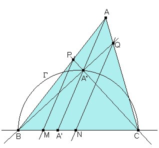
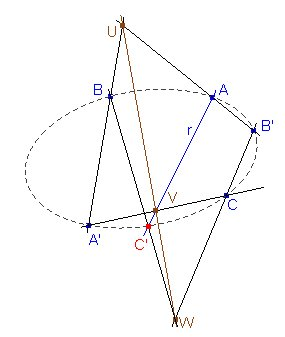
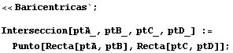
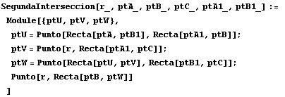
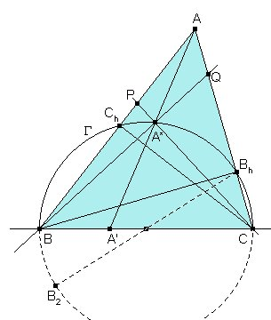
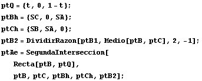
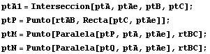
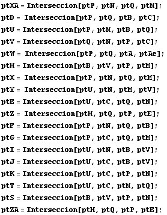
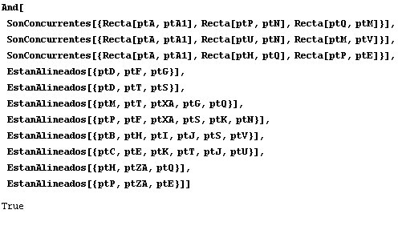

|
Sea ABC un triángulo no rectángulo. Trazamos, la ceviana arbitraria
AA' desde A al lado BC. Construimos los siguientes puntos :
Demostrar que:
|
|
Propuesto por Juan Bosco Romero Márquez
|

Consideraciones inicialesSi tomamos A' sobre BC y luego construimos A* sobre AA' de manera que BA*C sea rectángulo, A* deberá estar en la intersección de AA' con la circunferencia G de diámetro BC.
Para hacer más fácil el cálculo de la intersección con la circunferencia, en lugar de considerar a A* como punto de partida, consideraremos un punto Q variable en CA, y a partir de él obtendremos A* como la segunda intersección de G con la recta BQ. Una vez hallado A* podemos hallar A' y todos los demás puntos.

La segunda intersecciónLa geometría proyectiva proporciona una forma sencilla (usando sólo rectas) de obtener la intersección de una cónica dada por cinco puntos y una recta que pasa por uno de ellos.
Si la cónica pasa por los puntos A, B, C, A', B' y queremos hallar el otro punto C' en que corta a la cónica una recta que pasa por A, podemos considerar lala homografía que lleva A, B, C en A', B', C'. Entonces los tres puntos
U = AB' Ç A'B, V=CA'Ç C'A =CA'Çr, W = B'C Ç BC'
deberán estar alineados en el eje de homografía, y podemos hallar el punto uscado como C' = r ÇBW.
Para una explicación más a fondo, ver el documento de Jose María Pedret:
Para hacer cálculos con Mathematica con lo que hemos dicho hasta aquí invocamos al cuaderno Baricentricas.nb y definimos una función para hallar el punto de intersección de dos rectas AB y CD:

También definimos una función para obtener la segunda intersección de una recta con una cónica (nosotros la usaremos con una circunferencia):


Ahora usaremos esta función para obtener el punto A* a partir de un punto cualquiera Q sobre CA. Para usar la función SegundaInterseccion necesitamos cinco puntos de la circunferencia. Tenemos dos puntos B y C. También están en la circunferencia los pies Bh y Ch de las alturas desde B y C, respectivamente. Por último consideramos el punto antípoda B2 de Bh. Esto nos permite calcular A* (representado aquí como ptAe):
Ahora podemos calcular los demás puntos del enunciado. Estos ...

... y todos los demás:

Una vez hecho esto, podemos usar una sola instrucción para comprobar que son ciertas todas las afirmaciones del enunciado:
